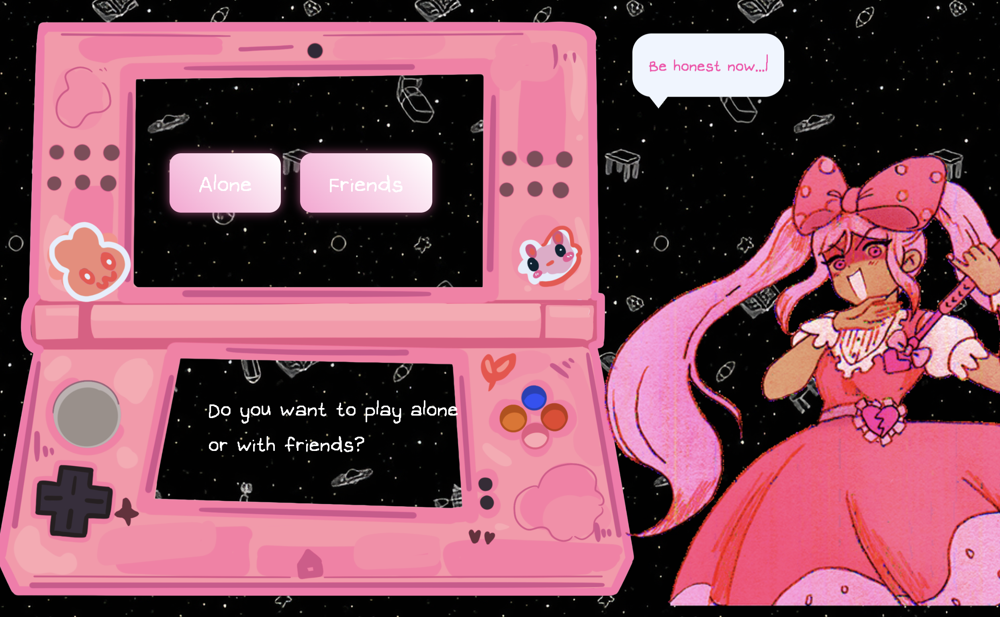

This project is a community tool that recommends a game based on the user’s mood and choices.
I designed it as a playful game recommender inspired by Sweetheart from Omori using HTML, CSS, JavaScript, and localStorage.